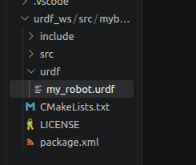
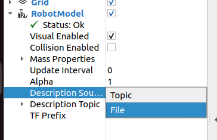
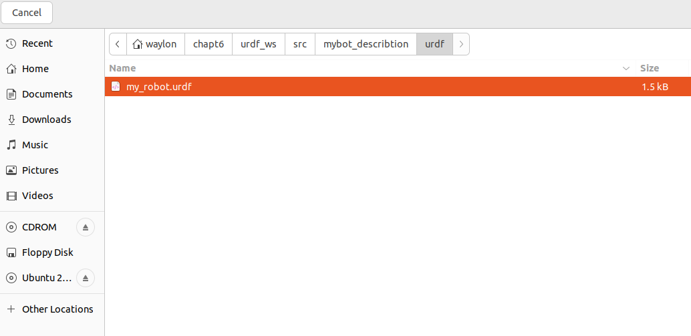
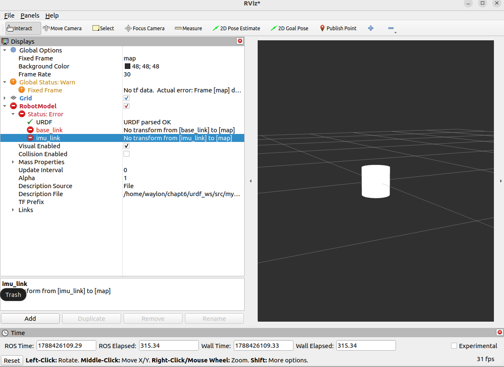
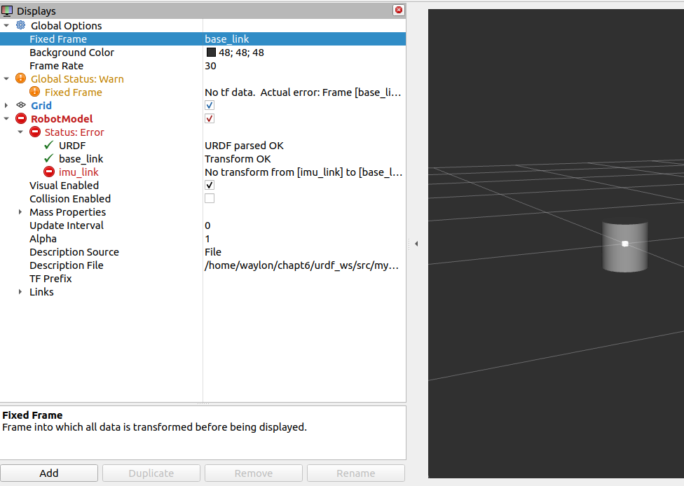
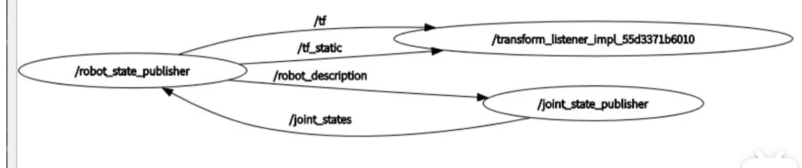
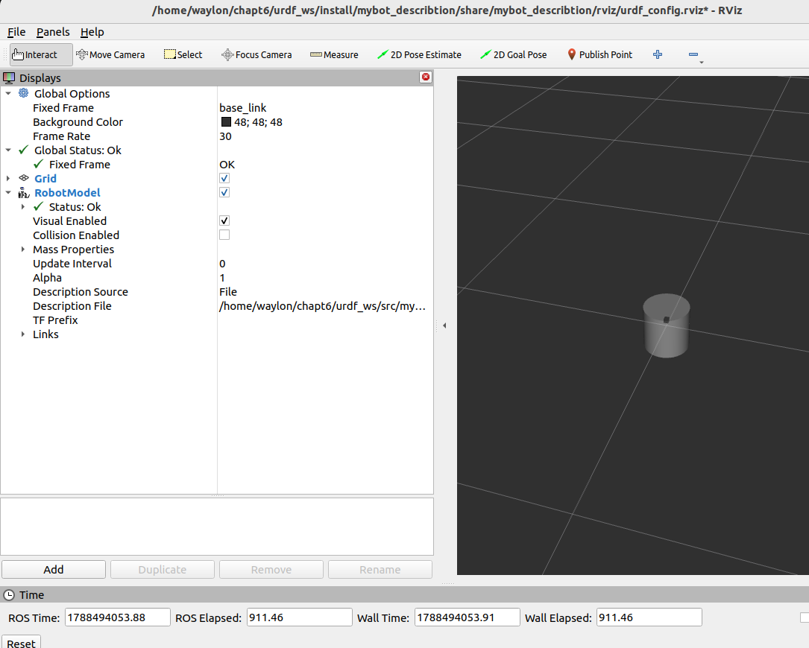
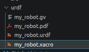
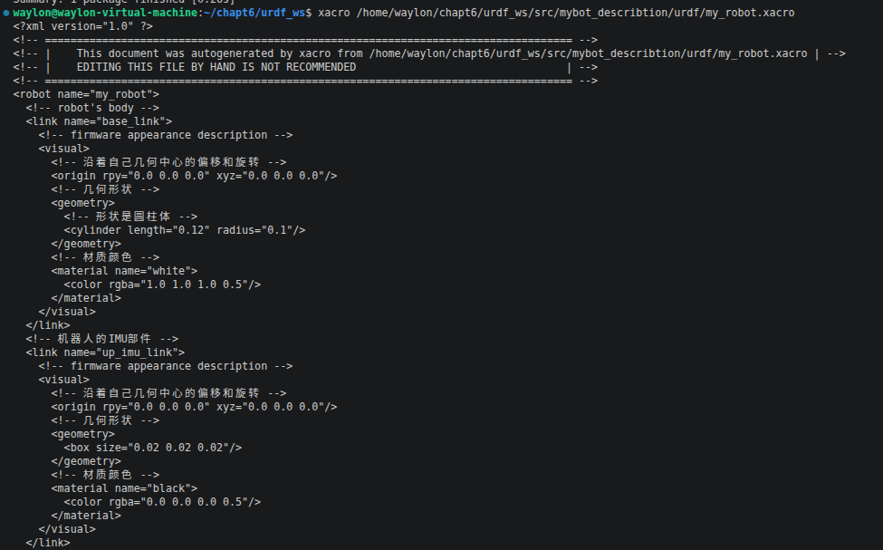
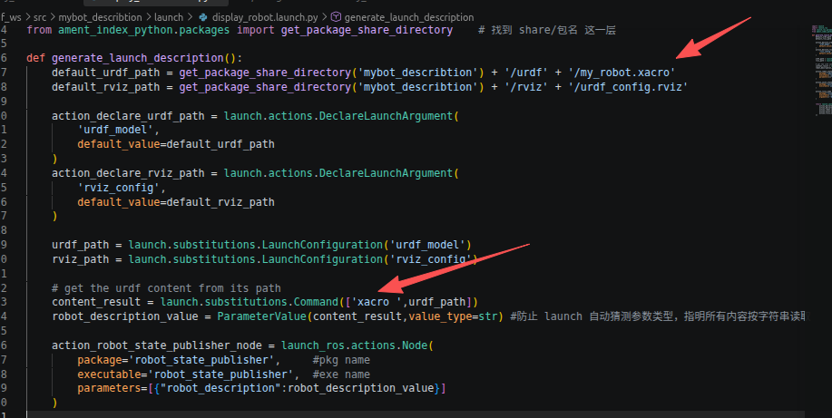

使用 URDF 创建机器人
本文介绍如何使用 URDF 创建一个简单机器人，包括 XML 编写、模型显示和 RViz 配置。
1、在功能包目录下添加 urdf 目录，并在该文件夹下创建一个 urdf 文件。

为了开发方便可以在Vscode 里安装 urdf 插件。
2、编写 XML 描述一个机器人，参考一下代码
<?xml version="1.0"?>
<robot name="my_robot">
<!-- robot's body -->
<link name="base_link">
<!-- firmware appearance description -->
<visual>
<!-- 沿着自己几何中心的偏移和旋转 -->
<origin xyz="0.0 0.0 0.0" rpy="0.0 0.0 0.0"/>
<!-- 几何形状 -->
<geometry>
<!-- 形状是圆柱体 -->
<cylinder radius="0.10" length="0.2"/>
</geometry>
<!-- 材质颜色 -->
<material name="white">
<color rgba="1.0 1.0 1.0 0.5"/>
</material>
</visual>
</link>
<!-- 机器人的IMU部件 -->
<link name="imu_link">
<!-- firmware appearance description -->
<visual>
<!-- 沿着自己几何中心的偏移和旋转 -->
<origin xyz="0.0 0.0 0.0" rpy="0.0 0.0 0.0"/>
<!-- 几何形状 -->
<geometry>
<box size="0.02 0.02 0.02"/>
</geometry>
<!-- 材质颜色 -->
<material name="black">
<color rgba="0.0 0.0 0.0 0.5"/>
</material>
</visual>
</link>
<!-- 机器人的关节，用于组合机器人的部件 -->
<joint name="imu_name" type="fixed">
<!-- 部件固定的位置 部件的中心相对于机器人的中心-->
<origin xyz="0.0 0.0 0.03" rpy="0.0 0.0 0.0"/>
<parent link="base_link"/>
<child link="imu_link"/>
</joint>
</robot>3、通过 urdf_to_graphiz 把 URDF 中的机器人连接关系画成一张图
在终端输入命令：
urdf_to_graphiz urdf_name.urdf4、通过 Rviz 查看 urdf 模型
选择 file

点 Description File 选择创建的 urdf 文件

可以看到有两个错误，原因是没有节点发布 map 到 base_link 与 map 到 imu_link 的TF

将基准坐标系改为 base_link 可以消除 base_link 的错误，但 imu_link 的错误还在，这是为什么？ 原因是 Rviz 不用读取 urdf 里的 TF 关系，只会接收节点发送的 TF 关系。

解决这个报错就需要下载两个工具去发布机器人与部件的 TF 关系，所以我用到了两个工具 robot-state-publisher 与 joint-state-publisher，他们的配合关系如下：

打开终端安装这两个工具
sudo apt install ros-$ROS_DISTRO-join-state-publisher
sudo apt install ros-$ROS_DISTRO-robot-state-publisher由于用终端启动这两个节点太麻烦了，所有最好还是写一个 launch 示例如下：
import launch
import launch_ros
from launch_ros.parameter_descriptions import ParameterValue
from ament_index_python.packages import get_package_share_directory # 找到 share/包名 这一层
def generate_launch_description():
default_urdf_path = get_package_share_directory('mybot_describtion') + '/urdf' + '/my_robot.urdf'
default_rviz_path = get_package_share_directory('mybot_describtion') + '/rviz' + '/urdf_config.rviz'
action_declare_urdf_path = launch.actions.DeclareLaunchArgument(
'urdf_model',
default_value=default_urdf_path
)
action_declare_rviz_path = launch.actions.DeclareLaunchArgument(
'rviz_config',
default_value=default_rviz_path
)
urdf_path = launch.substitutions.LaunchConfiguration('urdf_model')
rviz_path = launch.substitutions.LaunchConfiguration('rviz_config')
# get the urdf content from its path
content_result = launch.substitutions.Command(['cat ',urdf_path])
robot_description_value = ParameterValue(content_result,value_type=str) #防止 launch 自动猜测参数类型，指明所有内容按字符串读取
action_robot_state_publisher_node = launch_ros.actions.Node(
package='robot_state_publisher', #pkg name
executable='robot_state_publisher', #exe name
parameters=[{"robot_description":robot_description_value}]
)
action_joint_state_publisher_node = launch_ros.actions.Node(
package='joint_state_publisher', #pkg name
executable='joint_state_publisher', #exe name
)
action_riviz_node = launch_ros.actions.Node(
package='rviz2', #pkg name
executable='rviz2', #exe name
arguments=['-d', rviz_path],
)
return launch.LaunchDescription([
action_declare_urdf_path,
action_declare_rviz_path,
action_robot_state_publisher_node,
action_joint_state_publisher_node,
action_riviz_node
])可以看到报错都消失了

5、使用 Xacro 去简化 urdf 的编写
在前面用 XML 去编写 urdf 时可以看到如果机器人有多个部件其实很多代码都是重复的，这很明显违法了 DRY 原则，所以我们最好用 Xacro 去简化 urdf 的编写，Xacro 最大的好处呢就是在编写 urdf 时候能够创建与使用宏（就相当于函数），能够极大的降低代码的重复率。
先创建一个 xacro 文件：

参考如下代码：
<?xml version="1.0"?>
<robot xmlns:xacro="http://www.ros.org/wiki/xacro" name="my_robot">
<!-- 定义一个机器人宏 -->
<xacro:macro name="base" params="radius length">
<!-- robot's body -->
<link name="base_link">
<!-- firmware appearance description -->
<visual>
<!-- 沿着自己几何中心的偏移和旋转 -->
<origin xyz="0.0 0.0 0.0" rpy="0.0 0.0 0.0"/>
<!-- 几何形状 -->
<geometry>
<!-- 形状是圆柱体 -->
<cylinder radius="${radius}" length="${length}"/>
</geometry>
<!-- 材质颜色 -->
<material name="white">
<color rgba="1.0 1.0 1.0 0.5"/>
</material>
</visual>
</link>
</xacro:macro>
<!-- 定义一个IMU部件宏 -->
<xacro:macro name="imu" params="imu_name x y z ">
<!-- 机器人的IMU部件 -->
<link name="${imu_name}_link">
<!-- firmware appearance description -->
<visual>
<!-- 沿着自己几何中心的偏移和旋转 -->
<origin xyz="0.0 0.0 0.0" rpy="0.0 0.0 0.0"/>
<!-- 几何形状 -->
<geometry>
<box size="0.02 0.02 0.02"/>
</geometry>
<!-- 材质颜色 -->
<material name="black">
<color rgba="0.0 0.0 0.0 0.5"/>
</material>
</visual>
</link>
<!-- 机器人的关节，用于组合机器人的部件 -->
<joint name="${imu_name}_joint" type="fixed">
<!-- 部件固定的位置 部件的中心相对于机器人的中心-->
<origin xyz="${x} ${y} ${z}" rpy="0.0 0.0 0.0"/>
<parent link="base_link"/>
<child link="${imu_name}_link"/>
</joint>
</xacro:macro>
<xacro:base length="0.12" radius="0.1"/>
<xacro:imu imu_name="up_imu" x="0.0" y="0.0" z="0.05"/>
<xacro:imu imu_name="down_imu" x="0.0" y="0.0" z="-0.05"/>
</robot>虽然也是一坨看得人不想写，但可以看到定义两个 IMU 部件只需要再加一行代码即可，所以在多部件情况下可帮了我们大忙。
接下来就需要把这个 xacro 文件转换为 urdf 文件了 先在终端执行命令：
sudo apt install ros-$ROS_DISTRO-xacro现在就可以通过 xacro 加具体路径将 xacro 文件转化为 urdf 了

它会输出完整的 urdf 文件的内容到终端理，所以我们就可以改一下 launch 代码：

Rviz 理我们就可以改成 topic 的形式并设置 topic 为 /robot_description 这样就不用反复切换文件啦